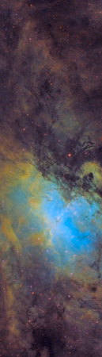
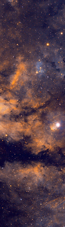
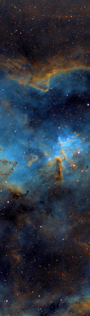
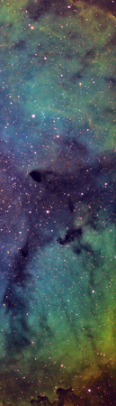
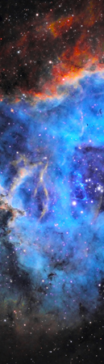
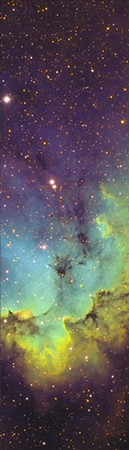
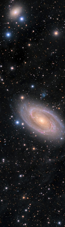
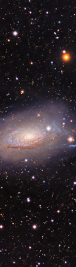
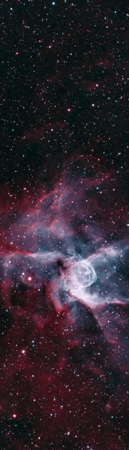
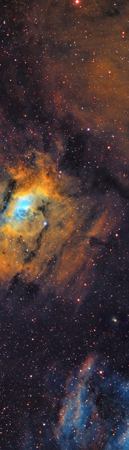
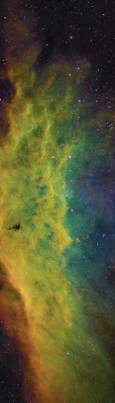
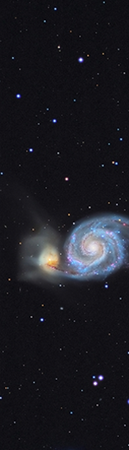
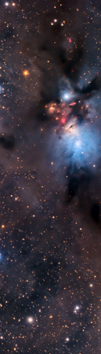
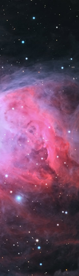
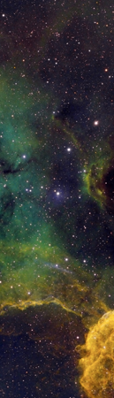
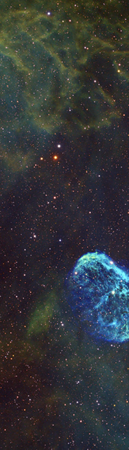
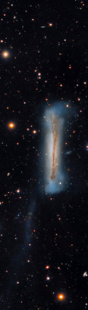
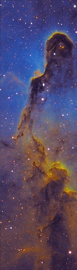
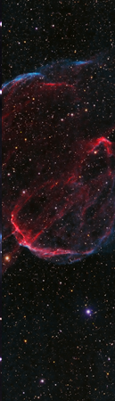
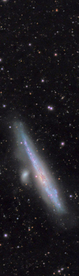
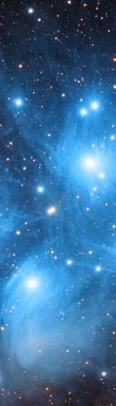
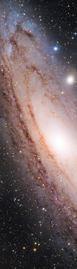
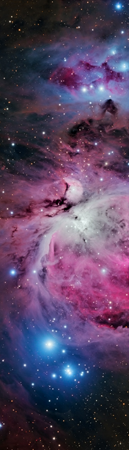
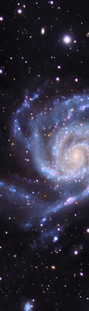
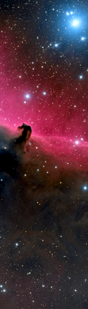
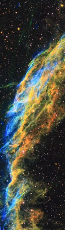
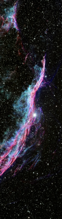
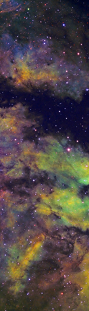
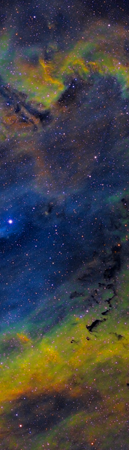
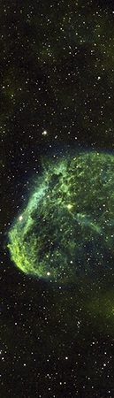
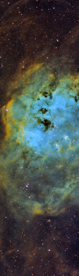
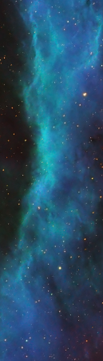
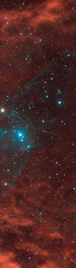
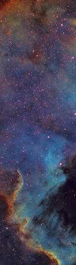
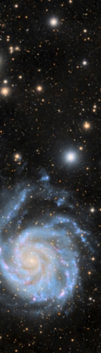
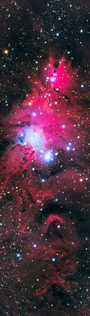
Latest images
After a long break from processing, we got back in to complete the year with three excellent data sets: The classic M51 galaxy collision with a few small friends surrounding; a high contrast narrowband color SH2-132; and an incredible view of VDB-152, a packed and chaotic nebula field featuring a dark Bok globule in the center. With new AI-based noise, deconvolution, and star masking tools in PixInsight, these set the stage for a great 2023 ahead!